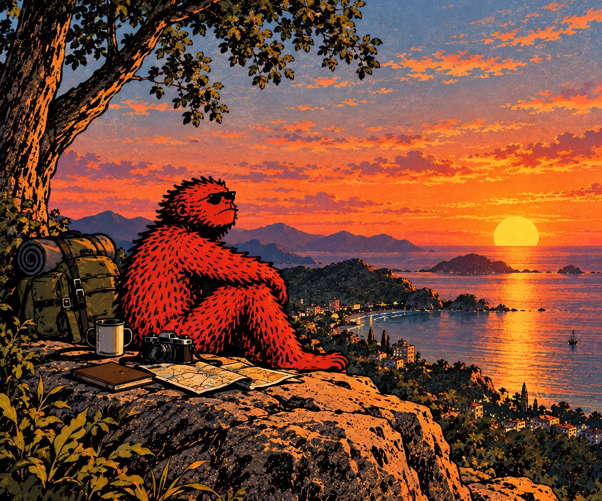
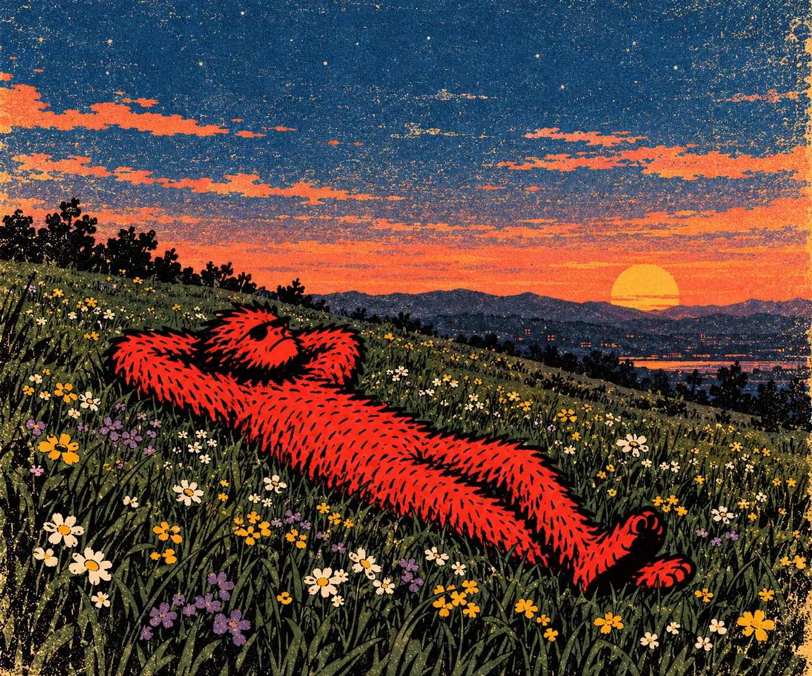
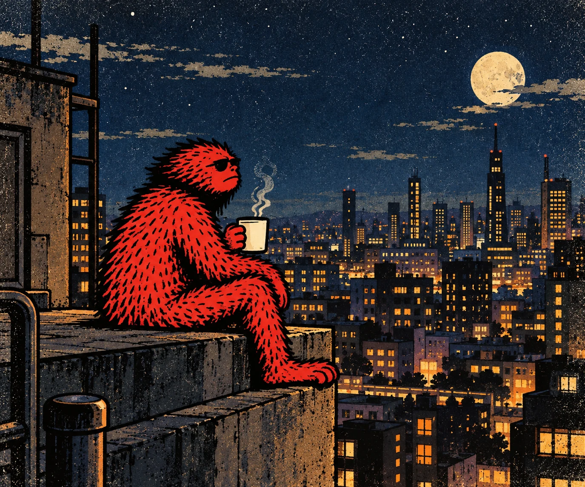
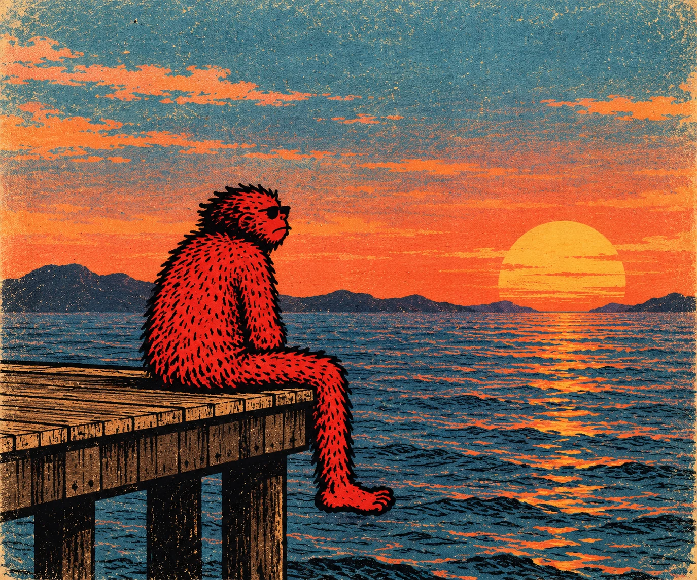

01 / THE COASTGolden hour
AN INDEPENDENT SPIRIT / SOLANA UNIVERSE
The world is big.
Take the long way home.
MEET THE LITTLE GUY
Meet Fluffy Rusty — a little red creature with a big world to discover. From quiet coastlines to rooftops above the city, he goes wherever the feeling takes him.
No rush. No map required. Just good views, late nights, and the freedom to find your own way.
Four moments.
One curious soul.
Infinite places to go.




Somewhere between the sunset and the stars.
BUILT FOR THE JOURNEY
Fluffy Rusty is building its corner of the internet. Follow the journey, meet the crew, and stay curious.
ADD_OFFICIAL_MINT_ADDRESSToken details are placeholders until official information is confirmed. This page does not promise returns.
THE JOURNEY IS BETTER TOGETHER
Follow Fluffy Rusty's next chapter.
Official social and market links will be added here when available.